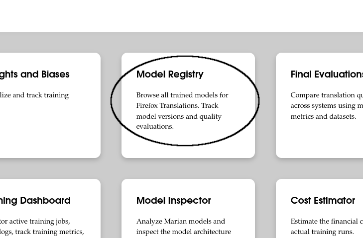
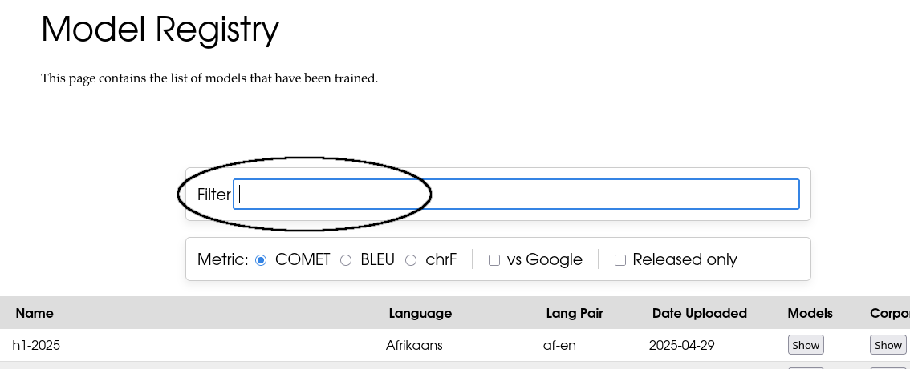
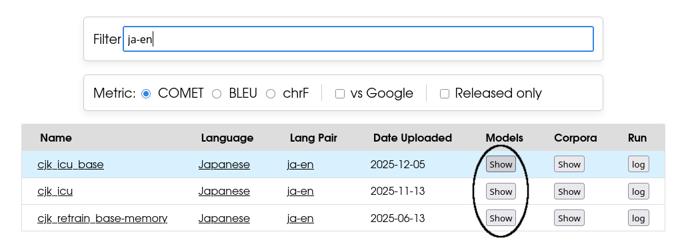
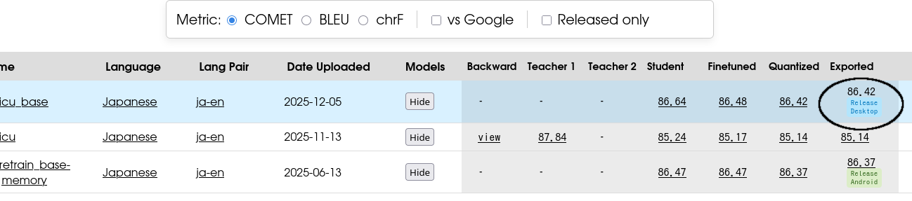
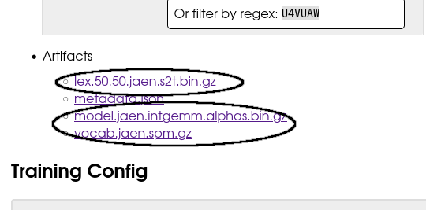
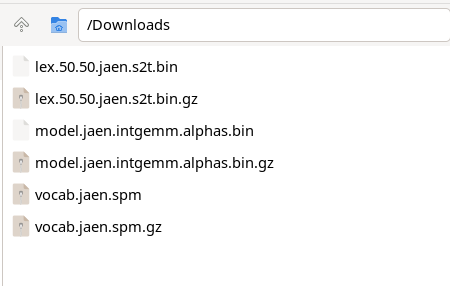
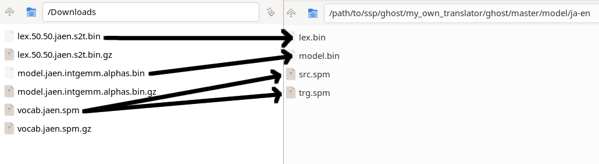
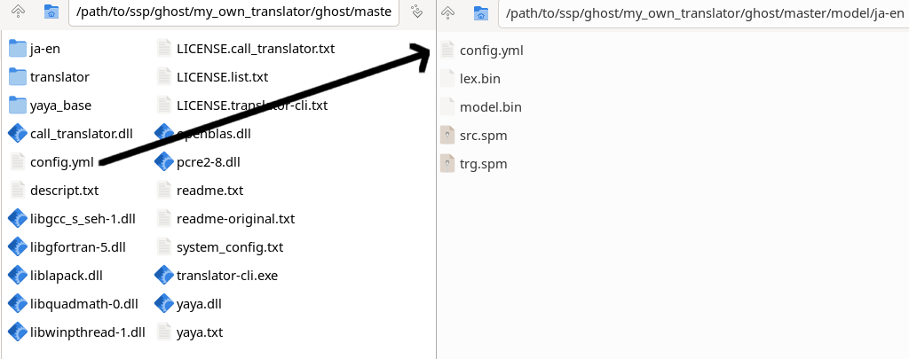

Getting started
In case of translating Japanese to English:
- Visit mozilla/translations
- Click "Model Registry"

- Enter "ja-en" to inputbox

- Once the filtered results are displayed, click "Show" button

- Click on the number "Exported" (larger number, better)

-
Download 3 file(lex.*.bin.gz, model.*.bin.gz, vocab.*.spm.gz)
If srcvocab.*.spm.gz and trgvocab.*.spm.gz exist instead of vocab.*.spm.gz, download srcvocab.*.spm.gz and trgvocab.*.spm.gz

- Extract *.gz

-
Copy lex.*.bin, model.*.bin and vocab.*.spm to "/path/to/ssp/ghost/my_own_translator/ghost/master/model/ja-en"
in this case, both src.spm and trg.spm is same file, but both are required
if you download srcvocab.*.spm.gz and trgvocab.*.spm.gz, copy them to the directory, and rename them to src.spm and trg.spm respectively

- Copy config.yml to the directory. Do not move it.

Note
This ghost uses local translation since v2.0.0, therefore accuracy of translation is worse than general translation (e.g. google translate, DeepL)
latest version available at Release